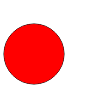

Вооружившись знаниями о моноидах, построим гибкую и расширяемую систему для вывода графики, использующую общедоступный web-интерфейс. Наша система будет представлять собой небольшой встроенный предметно-ориентированный язык (EDSL) для декларативного описания графики. Этот язык будет транслироваться в изображения формата SVG (Scalable Vector Graphics -- это текстовый формат, используемый веб-браузерами и многими векторными графическими редакторами, такими как
Мы создадим собственный язык для описания изображений, в котором можно задавать элементарные фигуры: ломаные линии, точки, круги...; трасформировать эти фигуры: вращать, масштабировать, перемещать...; и, самое главное, объединять их: накладывать друг на друга, размещать их, указывая что один объект находится сбоку или сверху от другого и т.д. По существу, мы построим алгебру изображений и научимся её вычислять (интерпретировать), получая реальные изображения в доступных форматах.
Типы для графических примитивов и изображений
Определим тип Primitive для представления двух (для начала) графических примитивов: точек и ломаных линий. Изображение будет представлено типом Picture, объединяющим множество примитивов:
type Pt = (Float, Float) data Primitive = Point Pt | Line [Pt] deriving Show data Picture = Picture [Primitive] deriving Show
Сразу продумаем как можно помбинировать примитивы и изображения. Самый непротиворечивый способ -- накладывать их друг на друга, то есть, изображать на одном холсте.
|  | <> |
= |
Более того, изображения образуют моноид с операцией наложения (убедитесь мысленно, что наложение ассоциативно и имеет нейтральный элемент). Определим экземпляр класса Monoid для типа Picture:
instance Monoid Picture where mempty = Picture mempty Picture p1 `mappend` Picture p2 = Picture (p1 <> p2)
У всех этих функций первый аргумент -- это координата нижнего левого угла фигуры, другие агрументы задают ширину и высоту фигуры.point :: Pt -> Picture line :: [Pt] -> Picture square :: Pt -> Float -> Picture rectangle :: Pt -> Float -> Float -> Picture triangle :: Pt -> Float -> Float -> Picture
Представление примитивов в формате SVG
В формате SVG наши примитивы представляются в виде строк:
- точка с координатами
(x, y) "<circle rx='x' ry='y' r='1'/>"
- ломаная линия с координатами
(x_1, y_1), (x_2, y_2),... "<polyline points='x1,y1 x2,y2 ...'/>"
format для форматирования строк по шаблону, последовательно заменяя символ '_' строками из списка. Например:
Подсказка: воспользуйтесь функциейMain> format "_ said: '_'" ["John", "Hello!"] "John said: 'Hello!'"
splitOn из модуля Data.List.Split для того, чтобы разбить форматируемую строку на части, а потом с помощью функции zipWith перемешайте эти части со строками из списка.
Определим собственный класс для того, что может быть экспортировано в SVG:
class SVG a where toSVG :: a -> String
Primitive:
instance SVG Primitive where toSVG p = case p of Point (x,y) -> _ Line pts -> _
Сами примитивы ещё не образуют полноценного изображения. Для того, чтобы можно было увидеть картинку, нужно объединить примитивы в такую структуру:
"<svg width='_' height='_' fill='none' stroke='black'>...</svg>"Здесь аттрибуты width и height задают размеры изображения, прочие параметры задают графические атрибуты, используемые по умолчанию.
SVG для типа Picture, задав фиксированные размеры изображения, скажем, 400×300.writeFile и убедитесь в том, что изображение открывается в веб-браузере. Создайте вспомогательную функцию writeSVG для удобного экспорта изображений в файл. writeSVG :: SVG a => String -> a -> IO ()
для правильных многоугольников заданного размера (размер задаётся радиусом описанной окружности). Первый аргумент определяет центр пногоугольника.polygon :: Pt -> Int -> Float -> Picture
Определение размеров изображения
Правильнее было бы не фиксировать размеры поля изображения в SVG-описании, а вычислять его, находя минимальные и максимальные значения координат примитивов. Эта информация будет нужна нам и для размещения изображений друг относительно друга.
Включим "рамку", обрамляющую изображения, в тип Picture и определим тип для координат рамки:
data Picture = Picture (Box, [Primitive]) deriving Show type Box = ((Min Float, Min Float), (Max Float, Max Float)) instance Bounded Float where minBound = -1000 maxBound = 1000
В типе Box первая пара задаёт левый нижний угол изображения, а вторая – правый верхний. Для того, чтобы использовать полугруппы Min и Max, экпортируем их (и только их) из библиотеки Data.Semigroup.
Для того, чтобы типimport Data.Semigroup (Min(..), Max(..))
Box стал моноидом, мы определили минимальную и максимальную границы значений координат.
Monoid для типа Picture никаких изменений вномить не нужно.poiny, line, square, ...
Для этого имеет смысл определить две вспомогательные функции findBox и makePicture, которые выполняли бы необходимые вычисления обрамляющей рамки для указанного примитива:
Используйте моноидальные свойства типаfindBox :: Primitive -> Box makePicture :: Primitive -> Picture
Box при вычислении рамки для примитива Line.
Picture):
box :: Picture -> (Pt, Pt) width :: Picture -> Float height :: Picture -> Float contents :: Picture -> [Primitive]
corner, возвращающую углы обрамляющей рамки изображения
и четыре селектораcorner :: Picture -> ((Pt, Pt), (Pt, Pt))
left, right, upper, lower
так, чтобы можно было бы получить правый нижний угол изображения с помощью выражения:
right . lower . corner $ p
Преобразования изображений
Воспользуемся тем, что мы научились перемножать матрицы (см. прошлое занятие). Существует класс преобразований плоскости, называемый афинными, при котором параллельные прямые переходят в параллельные прямые, пересекающиеся в пересекающиеся, скрещивающиеся в скрещивающиеся. К ним относятся движения: сдвиги, повороты и преобразования подобия.
Любое афинное преобразование вектора
Приведём три основные вида преобразований:
- масштабирование осей
x иy с множителямиa иb :\begin{pmatrix} a & 0 & 0\\ 0 & b & 0\\ 0 & 0 & 1 \end{pmatrix} - параллельный перенос вдоль вектора
(x,y) :\begin{pmatrix} 1 & 0 & x\\ 0 & 1 & y\\ 0 & 0 & 1 \end{pmatrix} - поворот на угол
\alpha :\begin{pmatrix} \cos \alpha & -\sin \alpha & 0\\ \sin \alpha & \cos \alpha & 0\\ 0 & 0 & 1 \end{pmatrix}
Affine, который абстрагирует это свойство и определяет оператор афинных преобразований, обозначим его ($.):
Напишите экземпляры этого класса для типовclass Affine a where ($.) :: Transform -> a -> a type Transform = M Float
Pt, Primitive и Picture.
scaleX :: Float -> Transform -- масштабирует координату x scaleY :: Float -> Transform -- масштабирует координату y scale :: Float -> Transform -- одинаково масштабирует обе координаты shift :: Float -> Float -> Transform -- параллельный перенос изображения rotate :: Float -> Transform -- поворот на угол, задаваемый в градусах вокруг центра координат rotateAt :: Pt -> Float -> Transform -- поворот вокруг указанной точки
let s = square (0,0) 50 s <> rotate 90 $. s s <> shift 10 30 $. s s <> (scaleX 2 <> scaleY 3) $. s s <> rotate 60 $. s s <> (shift 30 0 <> rotate 60) $. s
Primitive конструктор Circle Pt Float для окружности. Пусть, для простоты, при преобразованиях окружности изменяется только положение центра координат. Окружность, которую можно транформировать произвольной матрицей (увеличивать, превращать в эллипс и т.д.) можно построить с помощью функции polygon с большим числом углов.polygon и circle, а также ограничиться только размерами при конструировании квадрата и прямоугольника. Упростите определения этих конструкторов и введите простой оператор at, задающий абсолютные координаты левого нижнего угла изображения. С его помощью, например, можно было бы построить квадрат с вписанной в него окружностью и расположить его в координатах (100, 100) так:
(circle 50 <> rectangle 50 50) `at` (100,100)
(rotate 30 $.) <> (`at` (40, 40)) $ square 10
Picture содержит в себе информацию об области, обрамляющей изображение, и эту информацию можно использовать для приведения всех координат изображения в видимую область положительных координат. Измените определение функции toSVG для типа Picture так, чтобы перед выводом ось ординат направлялась вверх, а минимальные координаты изображения перемещались в начало координат.mconcat $ take 48 $ iterate (rotate 7.5 $.) $ square 50 `at` (25,25)

Новые способы комбинирования изображений
above и beside. Напишите их определение так, чтобы при результаты были тками, как показано на рисунке:
circle 30 `beside` square 40

circle 30 `above` square 40

row и column, которые располагали бы список изображений в виде ряда или колонки. Например так:
row $ circle <$> [20,40,80,160,80,40,20]

chart :: Picture -> [Int] -> Picture, которая строила бы диаграммы для списков целочисленных значений, как показано на примере:
chart (square 10) [1,2,1,2,3,2,1,4,2,3,6,5,4,3,4,3,1,2,1]

barChart :: Double -> [Double] -> Picture, которая строила бы столбчатую диаграмму для числовых списков, используя указанную ширину столбца:
scaleY 10 $. barChart 10 [1,2,3,2,3,4,5,4,3,2]